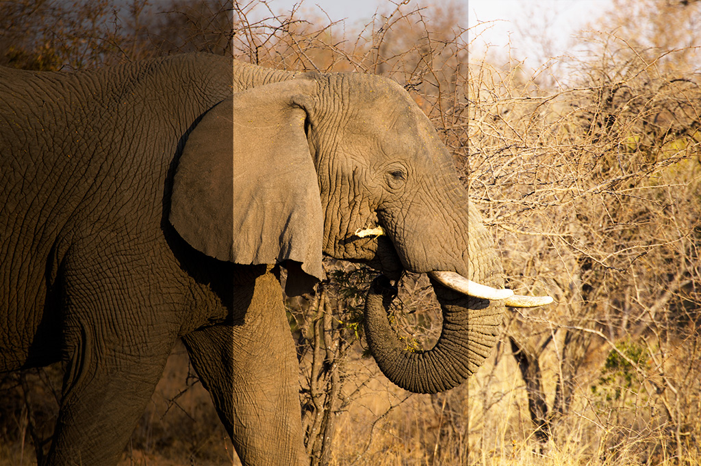

Hvad er et veleksponeret billede?
Et glas med vand
Hvordan dælen er det relateret til eksponering?
Definitioner
Spørgsmål før du tager et billede
Når sensoren i kameraet udsættes for lys, sker der en eksponering
Veleksponeret
Hvis lysmængden resulterer i et velbelyst billede, er billedet korrekt eksponeret
Undereksponeret
Hvis billedet bliver for mørkt, er det undereksponeret (eller underbelyst)
Der mangler detaljer i skyggeområderne
Overeksponeret
Hvis billedet er for lyst, er det overeksponeret (eller overbelyst)
Der mangler detaljer i højlysområderne

Et veleksponeret billede er som et glas fyldt med vand
Der må hverken være for meget eller for lidt vand i glasset
Hvordan kan vi kontrollere vandet?
 |
|
 |
|
|
| Glas-analogi | Kamera | |
|---|---|---|
Størrelsen på glasset | ISO | |
Vandhanens hastighed | Blænde | |
Lukketid
Blænde
ISO
Brændvidde
I hvor lang tid lukkes der lys ind
Måles i brøkdele af sekunder (eks. 30s, 1s, 1/100s, 1/1000s)
Hurtige lukketider fastfryser billedet
Langsomme lukketider giver rystede billeder
Blænden er størrelsen på det "hul" der er igennem objektivet
Ligesom øjets pupil
Styrer dybdeskarpheden (hvor stor del af baggrunden/forgrunden sløret)
Blændetallet er en brøk, der definerer forholdet mellem blændens diameter og objektivet brændvidde (eks. f/1.8, f/2 og f/24)
Jo større blændetal, jo mindre åbning og mindre lys kommer ind
Et objektiv på 100mm f/4, vil have en blænde på 25mm, og tilsvarende vil en 200mm f/4 have en blændeåbning på 50mm
Hvor lysfølsom sensoren er
Den laveste ISO-værdi er normalt 100 og derefter fordobles den: 100, 200, 400, 800, 1.600, …
For hvert trin fordobles følsomheden at man slet ikke får taget billedet.
Højere ISO giver mere billedstøj
Hvor stor betragtningsvinkel man kan se
Vidvinkel er lave brændvidder (stort udsnit af synsfeltet)
Tele er høje brændvidder (lille udsnit af synsfeltet)
Trækker objekter tættere ind til dig
f/8 * 1/120 = f/16 * 1/60
Har man fx korrekt eksponering ved blænde f/8 og lukker 1/120,
vil man også have korrekt eksponering ved blænde f/16 og lukker 1/60
For man lukker dermed halvt så meget lys ind i dobbelt så lang tid.
Er der noget der bevæger sig?
Hvor meget billedstøj kan du acceptere?
Hvor meget af billedet skal være sløret?
Måske er det bevægelser der skal være sløret
For at undgå rystede billeder, skal sammenhængen mellem
lukkertid, brændvidde og risiko være:
\$1/(brændvidde)\$
30 mm optik må man maksimalt bruge 1/30 sekund (1/60 er hurtigere, så det er jo fint)
50 mm optik må man maksimalt bruge 1/50 sekund
100 mm optik må man maksimalt bruge 1/100 sekund
You get the point